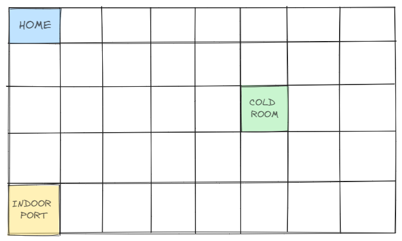

Introduction
Requirements
Requisiti dati dal committente
Ipotesi Sprint 0
Per definire un iniziale modello del sistema, ci concentriamo sul core business dell'applicazione e consideriamo le seguenti assunzioni:- l'applicazione non è distribuita
- il sonar e il led connessi al Raspberry saranno trattati nello Sprint successivo
- l'interfaccia utente sarà realizzata nello Sprint successivo
Requirement analysis
| Service area | modellata con una mappa, suddivisa in celle quadrate di lato RD |
| INDOOR port | area di servizio dove viene scaricato il carico da depositare nella Cold Room |
| Cold Room | container con capacità massima di MAXW kg |
| Transport trolley | interfaccia per l'utilizzo di un DDR robot, modellato come un quadrato con lato RD.
Posizionato inizialmente in | .
| Service Access GUI | interfaccia utente che consente di visualizzare il peso dei materiali attualmente nella Cold Room e mandare la richiesta di depositare ulteriori FW kg. Se la richiesta viene accettata, l'utente ottiene un ticket valido per un tempo TICKETTIME |
| Service Status GUI | interfaccia utente che consente ad un service manager di visualizzare lo stato del servizio |
| Sonar | dispositivo connesso ad un Raspberry Pi. Misura la distanza: quando è minore del limite dato DLIMIT, il |
| Led | dispositivo connesso ad un Raspberry Pi. Il Led è spento quando il trolley è in |
| Truck driver | l'utente che usa il servizio |

-
Possiamo suddividere l'area di servizio in celle di lato RD (dimensione del robot) e modellare
INDOOR port e Cold Room come posizioni sulla mappa (coordinate x, y).
-
Rappresentazione della stanza esplorata:
0 1 2 3 4 5 6 7 x 0 |r, 1, 1, 1, 1, 1, 1, 1 |1, 1, 1, 1, X, X, 1, 2 |1, 1, 1, 1, X, X, 1, 3 |1, 1, X, 1, 1, 1, 1, 4 |1, 1, 1, 1, 1, 1, 1, 5 |X, X, X, X, X, X, X, y- r: posizione corrente del robot
- X: cella occupata da un ostacolo
- 1: cella libera
User story data dal committente
service access GUI
| ID | handleRequest |
| descrizione | il truck driver richiede la possibilità di scaricare il carico di FW kg. |
| azione | l'interfaccia invia al servizio la richiesta ticket |
| postcondizione | se la richiesta è accettata, il truck driver raggiunge l'INDOOR port e inserisce il numero del ticket per poter scaricare il carico |
| ID | requestAccepted |
| descrizione | accettata la richiesta iniziale di scarico, il truck driver raggiunge la INDOOR port entro il tempo indicato sul ticket |
| precondizione | l'utente ha ricevuto un ticket con un codice univoco e un intervallo di tempo |
| azione | se il tempo trascorso è inferiore al TICKETTIME indicato dal ticket, la richiesta viene confermata e il carico viene scaricato |
| postcondizione | ricevuto il messaggio charge taken, il truck driver può lasciare l'INDOOR port |
coldstorageservice
| ID | handleRequest |
| descrizione | il servizio riceve la richiesta di scarico dall'interfaccia |
| azione | è inviata la richiesta store alla coldroom per verificare ci sia lo spazio necessario |
| postcondizione | se c'è abbastanza spazio nella coldroom la richiesta è accettata e il servizio risponde con un ticket: ogni ticket ha un codice e un intervallo di tempo di validità |
| ID | validate |
| descrizione | l'utente inserisce il codice del biglietto |
| precondizione | l'utente ha richiesto con successo il ticket |
| azione | se il tempo non è finito, il biglietto è valido e viene accettato il carico |
| postcondizione | il servizio manda la richiesta al trolley di raggiungere l'indoor port e, concluso lo scarico, risponde con il messaggio charge taken all'interfaccia |
coldroom
| ID | handleRequest |
| descrizione | verifica se c'è abbastanza spazio disponibile |
| azione | la cold room riceve dal servizio la richiesta di depositare FW kg e verifica se è possibile |
| postcondizione | se la richiesta è accettata, viene aggiornato lo spazio disponibile per le prossime richieste |
transport trolley
| ID | moveToIndoor |
| descrizione | il robot raggiunge la INDOOR port per scaricare il carico |
| precondizione | l'utente ha inviato la richiesta nell'intervallo di tempo dato |
| azione | il robot raggiunge la INDOOR port |
| postcondizione | al termine dello scarico viene inviato il messaggio charge taken |
| ID | moveToColdRoom |
| descrizione | il robot raggiunge la cold room per depositare il carico |
| precondizione | è avvenuto lo scarico alla INDOOR port con successo |
| azione | il robot raggiunge la cold room |
| postcondizione | se al termine arriva una nuova richiesta, il robot torna in INDOOR port altrimenti in HOME |
Problem analysis
Per realizzare un primo prototipo eseguibile, scegliamo di utilizzare il linguaggio di modellazione Qak, dato dalla software house. Il metamodello
- consente di catturare gli aspetti essenziali del sistema
- offre l'astrazione
QActor per rappresentare le entità come componenti autonomi ed indipendenti.
Qak service access GUI model

Qak cold room model

Qak transport trolley model

Codice completo per i QAK actors: coldstorageservice.qak
Test plans
Project
Piano di lavoro
| SPRINT1 |
|
| SPRINT2 |
|
| SPRINT3 |
|